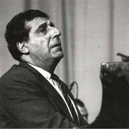

Առնո Բաբաջանյան
 «Ինչ էլ գրեմ՝ ստացվում է հայեցի»: Այդպիսին է մեր արվեստի մեծաշնորհ ներկայացուցիչներից մեկի՝ Առնո Բաբաջանյանի խորհրդանշական խոստովանությունը:
Շուրջ կես դար շարունակվեց ստեղծագործող ու կատարող, երաժշտության մոլեռանդ սիրահար արվեստագետի գործունեությունը, որն աոաջին իսկ քայլերից գրավեց երաժշտասեր հասարակայնության ուշադրությունը:
Առնո Բաբաջանյանը երևանցի էր: Նրա մանկությունն ու պատանեկությունը իր իսկ՝ երաժշտի ասելով, անբաժանելիորեն կապված էին նոր Երևանի կազմավորման, քաղաքի ինքնահաստատման հետ: Երևանում է ձևավորվել ապագա երաժշտի գեղարվեստական խառնվածքը, սկզբնավորվել և տարիների ընթացքում խորացել ազգայինի իր ըմբռնումը:
Ա. Բաբաջանյանի նախնիների մեջ, ինչպես և ընտանիքում մասնագիտությամբ երաժիշտներ չեն եղել, սակայն հայրը, ոչ միայն երաժշտության մեծ սիրահար էր, այլև քյամանչա, շվի ու ֆիսհարմոն էր նվագում: «Հատկապես հոգեպարար էր նրա շվին, իսկ «Դլե յամանը» լսել էր պետք»,- հուզմունքով հիշել է հետագայում կոմպոզիտորը: Նման գեղարվեստական տպավորությունները ազգայինի հարազատության վկայություններ են: Ազգայինի խորացմանը ծառայեց անձնվեր հայրական սերը, իր երկիրը և իր մշակույթն անսահման սիրող մարդու մշտական ազդեցությունը, ինչպես և շփումը ականավոր հայ մտավորականների հետ:
Մինչև իր կյանքի վերջին օրերը Առնո Բաբաջանյանը սրբությամբ պահպանեց Եղիշե Չարենցի հետ պատանեկության տարիներին հանդիպման մասին թանկ հուշերը: Ե. Չարենցի որոշմամբ 1932 թվին հրատարակվեց Ա. Բաբաջանյանի «Պիոներական քայլերգը», մեծ բանաստեղծի հեռատեսության վառ վկայություններից մեկը:
Ճակատագրի բերմամբ մանկապարտեզի ավարտական խմբում այլ երեխաների շարքում Առնոյի լսողությունը ստուգել էր Արամ Խաչատրյանն ու խորհուրդ տվել լրջորեն նվիրվել երաժշտությանը:
Ե.Խոսրովյանի դաշնամուրի դասերը երաժշտության ասպարեզում մասնագիտանալու սկիզբը դրին: Դաշնամուրի դասարանում ուսումը լուրջ ագդակ էր ստեղծագործությանը նվիրվելու: Ե.Խոսրովյանի դասերին հետևեցին երաժշտի ձևավորման համար բացառիկ կարևոր պարապմունքները Կ. Իգումնովի ղեկավարությամբ՝ սկզբում Երևանում, այնուհետև Մոսկվայի կոնսերվատորիայում: Դաշնամուրային դասերին զուգահեռ Ա. Բաբաջանյանը ստեղծագործության դասընթաց էր անցնում Վ.Տալյանի մոտ: Վերջինիս խելացի ու հեռատես ղեկավարությամբ երիտասարդ երաժիշտը, պրոֆեսիոնալ գիտելիքների հետ, յուրացնում էր և ազգային երաժշտության ոճական բնորոշ հատկանիշները:
Հարուստ ու բազմաժանր դաշնամուրային գրականության բարձրարժեք նմուշների կատարումը, (իսկ այդ մասին մշտապես մտահոգված էր Կ. Իգումնովը) խթանում էին նրա ստեղծագործական որոնումները:
Մոսկվայի Հայաստանի Կուլտուրայի տանը կից ստուդիայում Հ. Լիտվինսկու, Ն. Պեյկոյի, Դ. Ռոգալ-Լևիցկու ղեկավարությամբ պարապմունքները հզոր ազդակ էին ստեղծագործական այն ինքնահաստատման, որի աոաջին տպավորիչ արտահայտություններից էր Պոլիֆոնիկ սոնատը դաշնամուրի համար: Երիտասարդ ստեղծագործողի առաջխաղացման մասին վկայող այդ գործը լուրջ ներդրում էր հայ կոմպոզիտորական արվեստում, սակայն այդ փաստն ընկալվեց և արժեքավորվեց գրեթե տասը տարվա ուշացումով:
1947 թվին Ա. Բաբաջանյանին բախտ վիճակվեց մասնակցել Պրահայում կայացած Երիտասարդության աոաջին միջազգային փառատոնին, ուր բարձր գնահատվեց ու մրցանակի արժանացավ նրա «Բարձրացրեք բարեկամության դրոշները» երգը:
Անդրանիկ այդ հավաքի մասշտաբները, բազմատեսակ միջոցառումները, բազմազգ, տարբեր ճակատագրերի տեր երիտասարդների հետ հուզիչ հանդիպումները նման շփման անսովոր մթնոլորտը վառ տպավորություն թողեցին նրա վրա: Երիտասարդության միջազգային այդ հավաքը լուրջ խթան էր արվեստի հասարակական դերի ու տեղի, հետևաբար և ստեղծագործողի պարտավորության:
Ուսումը Մոսկվայում, գեղարվեստական հարուստ տպավորությունները խթանեցին սեփական գեղագիտական-գեղարվեստական իդեալների բյուրեղացումը, որոնց նոր երանգներ կհաղորդի ժամանակի բոտն ընթացքը:
50-ական թվականների սկզբին նա ավարտեց «Հերոսական բալադը», որը երիտասարդության փառատոնից ստացած տպավորությունների, ժամանակակից երիտասարդության ճակատագրի մասին խոհերի յուրովի արտացոլումը դարձավ: «Հերոսական բալադին» հաջորդող դաշնամուրային տրիոն վկայեց գեղարվեստական նոր որոնումների, նոր ձեռքբերումների մասին:
Ստեդծագործող ու կատարող Ա. Բաբաջանյանը 50-ական թվականներից նվիրվեց նաև մանկավարժական գործունեությանը:
Կ.Իգումնովի ղեկավարությամբ յուրացրած սկզբունքներին գումարվում էր իր՝ ստեղծագործողի ու կատարողի փորձը, ինչը կոմպոզիտորին օգնեց կարճ ժամանակում մշակել դասավանդման մեթոդական ճկուն հիմունքներ, որոնք շատ արդյունավետ եղան: Նրա ղեկավարած դաշնամուրային դասարանի սաները (Ռ. Թանդիլյան, Ռ. Շուգարով, ուրիշներ) մասնագիտական հիանալի գիտելիքներ ձեռք բերեցին:
50-ական թվականների վերջից հիմնականում բնակվելով Մոսկվայում՝ Ա. Բաբաջանյանն ամեն տարի պարտադիր մի քանի ամիս անց էր կացնում Երևանում, իսկ 1963 թվականից՝ նաև Դիլիջանի կոմպոզիտորների ստեղծագործական տանը:
Ստեղծագործական ձևավորման տարիներին զերծ չմնալով ազդեցություններից (Ս. Ռախմանիսով, Ա. Խաչատրյան), նա հասունությունը դիմավորեց վառ գեղարվեստական անհատականության հաղթական հաստատումով և այնուհետև, թեև ոչ հաճախակի, բայց հայ ու խորհրդային երաժշտության մեջ կարևոր ուղենիշներ հանդիսացող գործեր հեղինակելով:
Կոմպոզիտորի ստեղծագործական հասունության բարձրակետը 1959 թվին ավարտված Ջութակի ու դաշնամուրի սոնատն է:
Բաբաջանյան-երաժշտի մտածողության առաջընթացի ազդակները թե´ արտաքին, թե´ ներքին էին: Դասական ու ժամանակակից, ժողովրդական ու պրոֆեսիոնալ երաժշտությունը մշտապես սնել է արվեստագետի երևակայությանը՝ միաժամանակ օգնելով ինքնազարգացման հզոր ներուժի բացահայտմանը: Բնական վառ օժտվածությունը դրսևորվեց ազգային մտածելակերպի ու կոմպոզիտորական արվեստի հնարքների սինթեզման ինքնատիպ ձևերով:
60-70-ական թվականներին գրված թավջութակի կոնցերտը, Վեց պատկերները, Պոեմը դաշնամուրի համար, թիվ 3 Լարային կվարտետը գեղարվեստական նոր մտածողություն, ազգայինի նորարարական դրսևորում, ժամանակակից գրելաոճի բացահայտող տպավորիչ գործեր են:
Խոշոր կտավի գործերի համեմատաբար սահմանափակ քանակը փոխհատուցվում էր դրանցից ամեն մեկի պարունակած սկզբունքային նորարարությամբ, երաժշտական ժանրերի յուրովի մեկնաբանմամբ, ազգայինի գեղարվեստական անսպառ հնարավորությունների հմուտ կիրառումով:
Սկիզբ առնելով դեռևս 40-ական թվականների վերջին՝ ընդլայնվեց և Ա. Բաբաջանյանի ստեղծագործական կյանքում ինքնուրույն բնագավառ դարձավ էստրադային երաժշտությունը, առավելապես երգը: Հայ և ռուս բանաստեղծների բանաստեղծությունները հիմք դարձան հրապուրիչ մեղեդայնության, դինամիկ, ժամանակակից ռիթմական գծանկար ունեցող, հաճախ պարայնությամբ հագեցած երգերի համար: Խորհրդային երկրի հարյուրավոր կոլեկտիվների, բազմաթիվ մեներգիչների երկացանկում կոմպոզիտորի էստրադային երգերը նկատելի տեղ գրավեցին:
Կոմպոզիտորի գործունեությամբ չի սպառվում երաժշտի նկարագիրը: Դաշնակահար Ա. Բաբաջանյանի կատարումների հետ է կապված ազգային երաժշտական արվեստի ամենից փայլուն և իր տեսակի մեջ դեռևս չգերազանցված էջը: Կատարող Բաբաջանյանն ուներ միմիայն իրեն հատուկ թավշյա, միաժամանակ հարուստ ու գունեղ հնչողություն: Նրա նվագի հմայքի բաղադրիչներն էին տիպիկ «դաշնամուրային» ձեռքերին փայլուն տիրապեւոելը, հնչյունային հարուստ նրբերանգների խոր իմաստավորումը, միևնույն ժամանակ իր կատարողական ոճին հատուկ մոնումենտալությունն ու մասշտաբայնությունը: Նրա կատարումը խորապես համոզում էր գեղարվեստական հայեցակարգի ամբողջությամբ, միասնությամբ, տրամաբանված բարձրակետերով: Հանդես գալով ժամանակակից երաժշտական կատարողական արվեստի այնպիսի խոշորագույն ներկայացուցիչների հետ, ինչպիսիք էին Դավիթ Օյստրախն ու Սվյատոսլավ Կնուշևիցկին, նա ոչ միայն չէր զիջում այս երաժիտներին, այլև բարձրագույն մակարդակ էր դրսևորում:
Գեղարվեստական որոնումների ու հայտնաբերումների հագեցած ու հարուստ ուղի է անցել Բաբաջանյան-ստեղծագործողը: ժամանակային որոշակի ընդմիջումներով ստեղծված ամեն մի նոր գործ որոշումների ու ձեռքբերումների որակական մի նոր, կարևոր մակարդակի արտահայտություն էր:
Դարաշրջանի գեղարվեստական «շնչառության» հանդեպ զգայուն ու ընկալունակ երաժշտի գործերը արտացոլում էին ժամանակի մղումները, առաջադեմ հասարակության նախասիրությունները:
Կոմպոզիտորի խոշոր կտավի երկերը միմյանցից բաժանող ժամանակը ճիշտ նվիրված է եղել նոր մտահղացումների հասունացմանը, ուշագրավ գեղարվեստական հայեցակետի մշակմանը, գրելաոճի արհեստաբանական և տեխնիկական հնարավորությունների ընդլայնմանը:
Օրինաչափ էր, որ ազգային պրոֆեսիոնալ նոր դպրոցի մի ծանրակշիռ մասը կապված էր Բաբաջանյանի անվան հետ: Խաչատրյանական արվեստի ազնիվ ու նվիրյալ ժառանգորդը լինելով՝ նա ազգային երաժշտության մեջ ճանաչվեց անկաշկանդ հուզականության հետ՝ խոր ու դրամատիկ մտորումներ մարմնավորող, ավանդականին հարազատության ու հավատարմության հետ՝ նորի սուր զգացողությամբ օժտված արվեստագետ, տարերային անմիջականության հետ՝ կուռ ու կատարյալ կառույցին տիրապետող հեղինակ:
Ստեղծագործող Բաբաջանյանի խառնվածքին հարազատ էր ազգայինի ու արդիականի այն սինթեզը, որը հատուկ Էր Ա. Խաչատրյանի երաժշտությանը, նրա վառ ու պատկերավոր աշխարհին: Բաբաջանյանին հարազատ էին Խաչատրյանի մշակած թեմատիկ համակարգի բնորոշ դրսևորումները:
Արվեստագետի իր ողջ Էությամբ, Ա. Բաբաջանյանն իր իսկ դարաշրջանի ծնունդն Էր, նրա ջատագովը: Անկախ նրանից՝ քնարական, վիպերգական, թե դրամատիկական ուղղվածություն ուներ գործը, կերպարային բովանդակությամբ, հոգեկան լարվածքով, կրքերի հագեցվածությամբ այն արդիական Էր: Քնարականն ու վիպերգականը (Էպիկականը) կոմպոզիտորի գործերում ունեն իրենց հատուկ և' կամայնություն, և' ներքին դինամիզմ: Ա.Բաբաջանյանի ստեղծագործությունների «հերոսներն» ըմբոստ են, եռանդով լեցուն, նրանք, նպատակասլաց լինելով, զուրկ չեն որոշ տարերայնությունից: Կոմպոզիտորի արվեստը գործուն Է, իր բնույթով՝ շարժուն, եզակի դեպքերում Է հայեցողական: Նման արվեստի իրականացման տհալ ուղիները կապված Էին ելևէջային հարմոնիկ ոլորտի ճկունության, դիսոնանտայնության, մետրառիթմային ընդգծված իմպուլսների հետ:
Ա. Բաբաջանյանի արվեստն իր անհողդողդ կամայնությամբ, հուզականի հագեցումով, չխամրող ներգործությամբ հաստատում է լավատեսականի առաջնայնությունը:
Ինչ ժանրի էլ դիմեր կոմպոզիտորը՝ գտնում էր դեպի ունկնդրի հոգին տանող ուղիներ: Նրա խառնվածքին հոգեհարազատ էր ունկնդրի ջերմ արձագանքը և այդ իմաստով ևս նա շարունակում էր Արամ Խաչատրյանի ստեղծագործական ավանդույթները: Ա. Բաբաջանյանի խառնվածքի էական դրսևորումներից մեկը հուզական բարձրագույն շիկացումն է: էքսպրեսիան, ներքին հզոր եռանդը. հատկապես ստեղծագործական վաղ ու միջին շրջաններում, պատկերավոր ու գունեղ դրսևորում են ստանում: Տարիների ընթացքում ավելի զուսպ է դառնում հուզական ներկապնակը: Տիպական է դառնում մտավոր գործոնը: Այղ տեսակետից խորհրդանշնական է Ջութակի ու դաշնամուրի սոնատը:
Ժամանակակից երաժշտության նորագույն գեղարվեստական երևույթների հանդեպ կոմպոզիտորի հետաքրքրությունը մշտապես ստեղծագործական ակտիվ բնույթ է կրել: Խորհրդային կոմպոզիտորներից առաջիններից մեկը դիմելով սերիալ երաժշտությանը՝ նա Վեց պատկերներում վարպետորեն կիրառեց այն՝ գործն ամենևին չզրկելով ազգային ինքնատիպությունից: Սերիալ տեխնիկան, երաժշտական նյութի կազմակերպման նոր հնարավորություններ ստեղծելով, ապահովում էր շարքի կուռ կառուցվածքը:
Անդավաճան մնալով գեղարվեստական իր ուրույն տարերքին՝ կոմպոզիտորը դոդեկաֆոնիայի ու սոնորայնության սկզբունքները (Թավջութակի կոնցերտ, Երրորդ լարային կվարտետ) ծառայեցնում է իր ոճին, իսկ դա նշանակում էր՝ նաև ազգային երաժշտությանը:
Ինչպես ասվեց վերը, Ջութակի ու դաշնամուրի սոնատը նշագծեց կոմպոզիտորի ստեղծագործության բեկման կարևորագույն փուլը: Սոնատի երաժշտությունը վկայում է մտավորի ու հուզականի գեղեցիկ ներդաշնակաթյունը, ինչը հնարավոր է դարձրել համարձակորեն ընդլայնել և խորացնել ստեղծագործության բովանդակությունը, կերտել խորապես ներգործող կերպարներ: Առնական, կամային կերպարների սուր հակադրում է իրականացվում իր բնույթով դրամատիկ սոնատի երեք մասերում, որոնք սերտորեն կապված են բովանդակության միջանցիկ զարգացմամբ:
Դրամատիկ հագեցումը, ողբերգականի ընդգծումը (աոաջին մաս), փիլիսոփայական խոհերը (երկրորդ մաս) ամբողջանում են հերոսական ավարտում: Սոնատի կուռ դրամատուրգիան պայմանավորված բնույթով տարբեր, բայց ներքին իմաստով սերտորեն կապված կերպարներով, որոնց բացահայտմանը նպաստում է լայտմոտիվների հմուտ կիրառումը:
Սոնատի գեղարվեստական բարձր արժանիքները պայմանավորված են ջութակի ու դաշնամուրի կատարողական հարուստ հնարավորությունների բազմակողմանի ու լիարժեք օգտագործմամբ:
Ա. Բաբաջանյանի հուզական, հորդաբուխ ու շքեղ «Հերոսական բալադը» նրա գեղարվեստական մտածողության նոր կողմերի բացահայտման վառ վկայությունն է: Թեման ու հինգ վարիացիաները նյութի ազատ ու անկաշկանդ շարադրանքի, իրենց բնույթով տարբեր կերպարների հմուտ համադրման նմուշներ են: Որոշակի ծրագրայնության սկզբունքը իրականացնելու նպատակով կոմպոզիտորը ստեղծում է հերոսական, ըմբոստ-ռոմանտիկական (առաջին), նուրբ քնարական (երկրորդ), տոնական, պարային (երրորդ), սգո-ողբերգական (չորրորդ) բազմաբնույթ կերպարներ և բնականորեն ընդհանրացնող կենսակայուն ֆինալային (հինգերորդ մաս) վարիացիա: Ազգային ոգով, տիպական դարձվածքներով հարուստ «Հերոսական բալադը» բացահայտեց կոմպոզիտոր-կատարողի՝ մենակատար գործիքի, ինչպես և նվագախմբի բազմահմուտ, հնարամիտ կիրառումը: Դաշնամուրային տրիոն ազգային երաժշտության ու դասական արվեստի ավանդույթների, մասնավորապես, ազգային մեղեդային ու ձայնակարգային ոլորտի և դասական տոնայնական համակարգի ներդաշնակ մարմնավորման օրինակ է:
Դաշնամուրային տրիոն ստեղծվել էր այն տարիներին, երբ կոմպոզիտորի համար առանձնակի թանկ էին Ռախմանինովի դաշնամուրայնությունը, երաժշտության անկաշկանդ հուզական-պոռթկումնալից, կոտ կազմակերպված ռիթմական գծանկարը, դրամատիկ լարվածությունը: Միևնույն ժամանակ, կոմպոզիտորի Տրիոյում կոմիտասյան ավանդույթների ստեղծագործական զարգացումն է արտացոլվում:
Տրիոյի մասերի ինքնուրույնության կողքին, գործի ամբողջականությանն են ծառայում միջանցիկ թեմատիկ կապերը, որոնք սկիզբ են առել դանդաղ նախաբանի խորհրդավոր հնչյուններից: Ստեղծագործությանը հատուկ են տոնայնական կոնտրաստները, հյութեղ հարմոնիկ լեզուն, ի վերջո, Ֆուգատոյի վերաճող պոլիֆոնիկ երկխոսությունները, ենթաձայնային երանգներն ապահովում են հուզական լարվածության բարձր աստիճանը, ինքնահաստատման եռանդը: Դաշնամուրային տրիոյի շարադրանքի լարված ընթացքը գործին զարգացման թափ ու մասշտաբայնություն է հաղորդում:
Ա. Բաբաջանյանի «Պոեմը» և Վեց պատկերները գնահատվեցին որպես խորհրդային դաշնամուրային երաժշտությունը հարստացնող, նոր ուղիներ հարթող ստեղծագործությունները: Կոնտրաստների դրամատուրգիայի սկզբունքով է ղեկավարվել կոմպոզիտորը իր Վեց պատկերներում: Նրբակերտ «ժողովրդականը», խտացած մտորումները՝ «Խորալում», կամային կորովը՝ «Սասունցիների պարում»՝ շարքի այս բարձրակետը, նրա բնական կուլմինացիաներն են:
Ա. Բաբաջանյանի վերջին խոշոր կտավը՝ Դ.Շոստակովիչի հիշատակին նվիրված Լարային կվարտետը (թիվ 3), կոմպոզիտորին բնորոշող հուզական հագեցածության կողքին ունի ողբերգական մեդիտատիվ հատվածներ, որոնք ստեղծվել են՛ հեղինակի համար ոչ բնութագրական զուսպ արտահայտչամիջոցներով միտումնավոր սահմանափակվելու նպատակով:
Ա. Բաբաջանյանի գործերը մուտք գործեցին մեր ժողովրդի առօրյա՝ կազմելով դրա գեղարվեստական նկարագրի անքակտելի մասը: